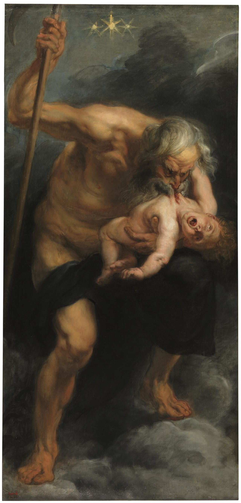
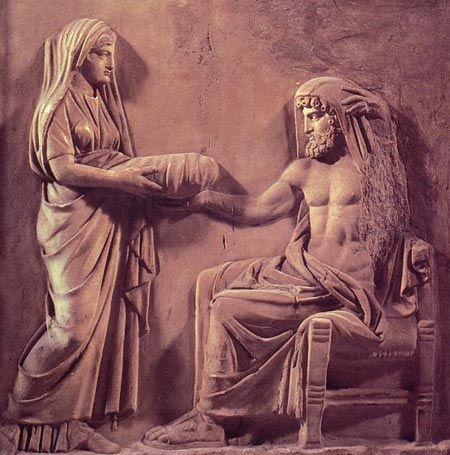

Gaia and Uranus — Earth and Sky — produced twelve Titans, three Cyclopes, and three Hecatoncheires (the hundred-handed giants). A dynasty of vast and ancient forces. But Uranus, the first patriarch of Greek myth, immediately did what Greek myth teaches us fathers do: he feared his children.
The Hecatoncheires were particularly terrible — enormous, powerful beyond measure, with fifty heads each. Uranus took one look at them and shoved them back inside Gaia. Into the earth, into his own wife's body, confined and buried. He did the same with the Cyclopes. His solution to children he could not control was to pretend they did not exist.
This is the first of many acts of violent suppression in Greek mythology that backfire catastrophically. Gaia, who was not consulted, who bore the weight of her own imprisoned children, was in pain. And pain, in these myths, is always the beginning of a plot.
The sickle
She made a great adamantine sickle — grey flint, with a serrated edge — and she went to her Titan children with a proposition. One of them would have to castrate their father. The prize: rule over the cosmos. The requirement: more nerve than anyone had yet displayed.
Eleven of the twelve Titans declined. Cronus said yes.
The ambush, when it came, was simple. Uranus descended to lie with Gaia at night, as he always did. Cronus was waiting. He reached out from concealment with the sickle, severed his father's genitals, and threw them into the sea.
Side myth What else came from the blood
Aphrodite was not the only thing born from that act. Hesiod records that where the drops of Uranus's blood fell on Gaia herself, she conceived and bore three further broods: the Erinyes (the Furies, who would go on to punish crimes against blood-kin, especially murdered parents), the Giants, born fully armed, and the Meliae, nymphs of the ash tree.
The pattern is exact: violence done to a parent produces avengers of parental violence. The Erinyes exist, mythologically, so that no future Cronus or Zeus can commit this exact crime without consequence. The Giants, meanwhile, would wait in the earth for their own war against Olympus generations later.
Uranus, bleeding, cursing, was driven from his position. He had one parting gift for his son: a prophecy. Just as Cronus had overthrown him, so one of Cronus's own children would overthrow Cronus. The curse of the usurped father was already in motion before the new king had sat down.
The reign of Cronus

Peter Paul Rubens, Saturn, c. 1636 — Museo del Prado, Madrid
Cronus ruled during what Hesiod calls the Golden Age — a time of peace and abundance, when humans lived without toil or suffering, "like gods." But this idyll only applied to mankind. For the gods themselves, for Cronus's own family, things were considerably more anxious.
He took his sister Rhea as his consort. Together they had six children: Hestia, Demeter, Hera, Hades, Poseidon, and Zeus. And as each child was born, Cronus swallowed it.
His logic was direct: if the prophecy said a child would overthrow him, then there would be no children. He would eat them before they could become a threat. It is the most extreme version of what his father had done — Uranus had buried his children alive, Cronus simply consumed them. The family pattern was repeating.
Rhea watched five of her children disappear. By the time she was pregnant with her sixth, she had decided she would not lose this one. She went to Gaia — who understood, better than anyone, what it was to have children taken from you — and together they made a plan.
The stone

Rhea presenting the stone to Cronus — Roman relief, 2nd century CE
Rhea gave birth to Zeus in secret, in Crete, in a cave on Mount Ida. She wrapped a stone in swaddling clothes and presented it to Cronus. He swallowed it without looking. The infant Zeus was left in the care of the Cretan nymphs and raised in hiding, fed on honey and goat's milk.
This is where the first dynasty ends and the next begins — not with a battle yet, but with a deception. A mother who was cleverer than the king. A king who was too confident to look carefully at what he was putting in his mouth.
Zeus would grow to adulthood in that cave. He would return. And unlike his father's generation, who had ten Titans to help them, he would need allies, strategy, and ten years of war to take what was his. That war — the Titanomachy — was coming. But first, there was the matter of making Cronus vomit up his siblings.
The trick, when it came, was simple: a disguised drink, an emetic mixed into Cronus's cup. One by one, the swallowed Olympians emerged — first the stone (which Zeus would later place at Delphi as the navel of the world), then Poseidon, then Hades, then Hera, Demeter, Hestia. Fully grown. Furious. Ready.
Side myth The stone at Delphi
The stone Cronus vomited up did not disappear from the story. According to Pausanias, the 2nd-century CE travel writer, it was kept at Delphi and shown to visitors, anointed with oil each day and wrapped in raw wool on festival days. The Greeks called it the Omphalos, "navel," and treated it as the physical marker of the centre of the world.
The identification is telling: the very object that failed to be swallowed as the future king becomes, centuries later, the sacred marker of the world's midpoint, kept at the site of Apollo's oracle. A relic of a father's mistake turned into a monument at the world's centre of prophecy.